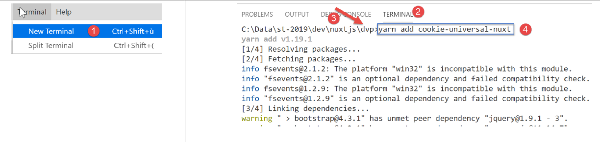
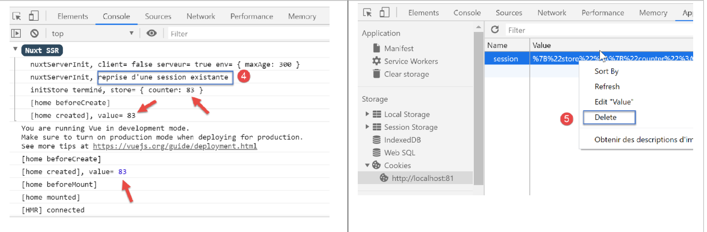

8. Ejemplo [nuxt-05]: persistencia del almacén con una cookie de sesión
Objetivo: queremos que el almacén [Vuex] no se reinicie con cada solicitud al servidor. Para ello, utilizaremos una cookie de sesión:
- el almacén será inicializado por el servidor y este lo incluirá en una cookie de sesión;
- el navegador del cliente recibirá esta cookie de sesión y la enviará automáticamente con cada nueva solicitud al servidor;
- el servidor podrá entonces recuperar esta cookie de sesión y trabajar con el almacén que contiene, un almacén actualizado por el cliente;
8.1. Présentation
El proyecto [nuxt-05] se obtiene inicialmente copiando el proyecto [nuxt-04]:

Veremos que solo cambiará el archivo [store / index.js].
Para utilizar cookies con [nuxt], utilizaremos el módulo [cookie-universal-nuxt], que instalaremos junto con [yarn] en un terminal VSCode:

- En [4], escribimos el comando [yarn add cookie-universal-nuxt];
De este modo, se añade un nuevo módulo al archivo [package.json] del proyecto [dvp]:
...
},
"dependencies": {
"@nuxtjs/axios": "^5.3.6",
"bootstrap": "^4.1.3",
"bootstrap-vue": "^2.0.0",
"cookie-universal-nuxt": "^2.0.19",
"nuxt": "^2.0.0"
},
8.2. El archivo de configuración [nuxt.config.js]
Para que [nuxt] pueda utilizar las cookies de [cookie-universal-nuxt], es necesario declarar este módulo en el archivo de configuración [nuxt.config.js]:
...
],
/*
** Nuxt.js modules
*/
modules: [
// Doc: https://bootstrap-vue.js.org
'bootstrap-vue/nuxt',
// Doc: https://axios.nuxtjs.org/usage
'@nuxtjs/axios',
// https://www.npmjs.com/package/cookie-universal-nuxt
'cookie-universal-nuxt'
],
...
- en la línea 12, se añade el módulo [cookie-universal-nuxt] a la tabla de módulos [6] de [nuxt];
El archivo [nuxt.config.js] queda finalmente así:
export default {
mode: 'universal',
/*
** Headers of the page
*/
head: {
title: 'Introduction à [nuxt.js]',
meta: [
{ charset: 'utf-8' },
{ name: 'viewport', content: 'width=device-width, initial-scale=1' },
{
hid: 'description',
name: 'description',
content: 'ssr routing loading asyncdata middleware plugins store'
}
],
link: [{ rel: 'icon', type: 'image/x-icon', href: '/favicon.ico' }]
},
/*
** Customize the progress-bar color
*/
loading: { color: '#fff' },
/*
** Global CSS
*/
css: [],
/*
** Plugins to load before mounting the App
*/
plugins: [],
/*
** Nuxt.js dev-modules
*/
buildModules: [
// Doc: https://github.com/nuxt-community/eslint-module
'@nuxtjs/eslint-module'
],
/*
** Nuxt.js modules
*/
modules: [
// Doc: https://bootstrap-vue.js.org
'bootstrap-vue/nuxt',
// Doc: https://axios.nuxtjs.org/usage
'@nuxtjs/axios',
// https://www.npmjs.com/package/cookie-universal-nuxt
'cookie-universal-nuxt'
],
/*
** Axios module configuration
** See https://axios.nuxtjs.org/options
*/
axios: {},
/*
** Build configuration
*/
build: {
/*
** You can extend webpack config here
*/
extend(config, ctx) {}
},
// directorio del código fuente
srcDir: 'nuxt-05',
// enrutador
router: {
// raíz de los URL de la aplicación
base: '/nuxt-05/'
},
// servidor
server: {
// puerto de servicio, 3000 por defecto
port: 81,
// direcciones de red a las que escucha, por defecto localhost: 127.0.0.1
// 0.0.0.0 = todas las direcciones de red del equipo
host: 'localhost'
},
// entorno
env: {
maxAge: 60 * 5
}
}
- línea 79: se ha añadido la clave [env] al archivo. Esta clave es una palabra reservada. Los elementos declarados en este objeto están disponibles a partir del objeto [context.env] en los elementos de la aplicación;
- línea 80: el atributo [maxAge] será la duración máxima de la cookie de sesión, que se mide desde la última vez que se inicializó la cookie. Esta duración se expresa en segundos. Aquí se ha establecido una duración de 5 minutos;
8.3. El principio de la persistencia del almacén
Las cookies intercambiadas entre el cliente y el servidor están disponibles en ambos lados (cliente y servidor) en:
- [context.app.$cookies], allí donde está disponible el objeto [context], es decir, prácticamente en todas partes;
- [this.$cookies] dentro de una vista;
Se obtiene una cookie concreta con la expresión [...$cookies.get(‘nom_du_cookie’)]. Se establece el valor de una cookie con la expresión [...$cookies.set(‘nom_du_cookie’, valeur_du_cookie)].
El principio de la cookie de persistencia del almacén será el siguiente:
- cuando el servidor inicialice el almacén en la función [nuxtServerInit], el estado del almacén se almacenará en una cookie denominada «session»;
- la cookie «session» formará entonces parte de la respuesta HTTP del servidor. Sabemos que un navegador devuelve al servidor las cookies que este le ha enviado. Lo hace con cada nueva solicitud que realiza al servidor. También sabemos que el servidor envía el almacén dentro de la página que envía al cliente;
- dentro del navegador, la aplicación cliente recupera el «store» enviado por el servidor y, a continuación, realiza su trabajo. Nos aseguraremos de que, cada vez que modifique el «store», su nuevo estado se almacene en la cookie «session» registrada por el navegador;
- si el usuario fuerza una llamada al servidor, el navegador cliente reenviará automáticamente todas las cookies que el servidor le haya enviado previamente, en particular la cookie denominada «session»;
- cuando, tras esta llamada, el servidor reinicie de nuevo el almacén, recuperará la cookie denominada «session» e inicializará el estado del almacén con el valor de esta;
- por lo tanto, habrá continuidad del almacén entre el cliente y el servidor;
8.4. Inicialización del almacén
El almacén está implementado en el archivo [store / index.js]:
/* eslint-disable no-console */
export const state = () => ({
// contador
counter: 0
})
export const mutations = {
// incremento del contador en un valor [inc]
increment(state, inc) {
state.counter += inc
},
// sustitución del estado
replace(state, newState) {
for (const attr in newState) {
state[attr] = newState[attr]
}
}
}
export const actions = {
async nuxtServerInit(store, context) {
// ¿Quién ejecuta este código?
console.log('nuxtServerInit, client=', process.client, 'serveur=', process.server, 'env=', context.env)
// se espera a que finalice una promesa
await new Promise(function(resolve, reject) {
// Normalmente, aquí hay una función asíncrona
// la simulamos con una espera de un segundo
setTimeout(() => {
// inicialización de la sesión
initStore(store, context)
// Éxito
resolve()
}, 1000)
})
}
}
function initStore(store, context) {
// ¿Hay alguna cookie de sesión en la solicitud actual?
const cookies = context.app.$cookies
const session = cookies.get('session')
if (!session) {
// no hay ninguna sesión existente
console.log("nuxtServerInit, initialisation d'une nouvelle session")
// se inicializa el almacén
store.commit('increment', 77)
} else {
console.log("nuxtServerInit, reprise d'une session existante")
// se actualiza el almacén con la cookie de sesión
store.commit('replace', session.store)
}
// Se guarda el almacén en la cookie de sesión
cookies.set('session', { store: store.state }, { path: context.base, maxAge: context.env.maxAge })
// registro
console.log('initStore terminé, store=', store.state)
}
Comentarios
- líneas 2-5: el almacén estará formado por un contador;
- líneas 9-11: este contador se podrá incrementar;
- líneas 13-17: el estado del almacén se podrá inicializar a partir de un nuevo estado. Esta función sirve para mostrar una posible inicialización del almacén cuando este no se limita únicamente al contador, como en este caso;
- líneas 21-35: la función [nuxtServerInit] no ha cambiado;
- línea 30: cuando transcurre el tiempo de espera de un segundo, se inicializa el almacén mediante la función de las líneas 38-56;
- líneas 40-41: primero se recupera la cookie denominada «session»:
- durante la primera ejecución de la aplicación y en la primera solicitud enviada al servidor, esta cookie aún no existirá. Se creará entonces (línea 53) y se enviará al navegador del cliente;
- durante la misma ejecución de la aplicación y en las solicitudes n.º 2, 3, … realizadas al servidor, esta cookie ya existirá, ya que el navegador del cliente la reenviará con cada nueva solicitud realizada al servidor;
- durante una segunda ejecución de la aplicación y en la primera solicitud enviada al servidor, esta cookie también puede existir. De hecho, al finalizar el paso 1, la cookie se ha almacenado en el navegador con una determinada duración. Si no se ha superado dicha duración, la cookie denominada «session» se enviará con la primera solicitud enviada al servidor
En resumen, para cada solicitud enviada al servidor: si la cookie «session» ya está almacenada en el navegador del cliente, el servidor la recibirá; de lo contrario, no la recibirá.
- líneas 42-47: si el servidor no recibe la cookie de sesión, el almacén se inicializa mediante la línea 46;
- luego, en la línea 53, se creará una cookie denominada «session» y se incluirá en la respuesta HTTP del servidor. El valor de la cookie es el objeto [{ store: store.state }]. Por lo tanto, lo que se incluye en la cookie de sesión es el estado del almacén y no el almacén en sí;
- el tercer parámetro de la función [set] es un objeto de opciones:
- [path] indica a qué URL debe reenviarse esta cookie. [context.base] es el URL básico de la aplicación [nuxt-05]. Este se define en el archivo [nuxt.config.js]:
// enrutador
router: {
// raíz de los URL de la aplicación
base: '/nuxt-05/'
},
- [maxAge] es el tiempo de vida, en segundos, de la cookie en el navegador. Transcurrido este tiempo, el navegador ya no la reenvía al servidor. [context.env.maxAge] vuelve a devolver un valor registrado en el archivo [nuxt.config.js]:
[env] es una palabra clave reservada del archivo de configuración. Aquí se establece la vida útil en 5 minutos. Este tiempo se mide desde la última vez que el navegador recibió la cookie de sesión. Una vez transcurrido este tiempo, la cookie no se reenviará al servidor, que deberá iniciar entonces una nueva sesión;
- líneas 48-50: si el servidor recibe la cookie de sesión, se inicializa el estado del almacén con el objeto [store] de la cookie de sesión. Recordemos que este objeto contiene el estado guardado del almacén;
- luego, en la línea 53, la cookie de sesión se incluirá en la respuesta enviada al navegador del cliente:
- la función [get] recupera la cookie de sesión de la solicitud recibida por el servidor;
- la función [set] incluye la cookie de sesión en la respuesta que el servidor envía al navegador del cliente;
- luego, en la línea 53, la cookie de sesión se incluirá en la respuesta enviada al navegador del cliente:
8.5. Incremento del contador de la tienda
El incremento del contador en la página [index.vue] se desarrolla de la siguiente manera:
// gestión de eventos
methods: {
incrementCounter() {
console.log('incrementCounter')
// incremento del contador en 1
this.$store.commit('increment', 1)
// cambio del valor mostrado
this.value = this.$store.state.counter
// guardar el estado en la cookie de sesión
this.$cookies.set('session', { store: this.$store.state }, { path: this.$nuxt.context.base, maxAge: this.$nuxt.context.env.maxAge })
}
}
Por parte del cliente, cada vez que se modifica el almacén, hay que guardarlo en la cookie de sesión. De hecho, el usuario puede solicitar una URL manualmente en cualquier momento y, en ese caso, hay que poder enviar al servidor un almacén actualizado. Por eso, en la línea 10, tras incrementar el contador del almacén, se guarda su estado en la cookie de sesión:
- las cookies están disponibles en la propiedad [this.$cookies];
- el estado del almacén [this.$store.state] se guarda en la cookie asociada a la clave [store];
- la ruta de la cookie es [context.base]. En una vista, el contexto está disponible en [this.$nuxt.context];
- la vida útil de la cookie es [context.env.maxAge], disponible aquí en la propiedad [this.$nuxt.context.env.maxAge];
8.6. Ejecución del ejemplo [nuxt-05]
Iniciamos la aplicación [nuxt-05]:

Las siguientes capturas de pantalla corresponden a un navegador Chrome. Solicitamos el URL [http://localhost:81/nuxt-05/]. No olvides el último / detrás de /nuxt-05, ya que, de lo contrario, no obtendrás los resultados esperados:

- en [4], hemos obtenido el valor inicial del store (77);
Analicemos los registros del navegador (F12):

- en [5-6], los registros del servidor;
- en [7], vemos que el servidor inicia una nueva sesión. Esto significa que no ha recibido ninguna cookie de sesión;
- en [8], inicialización del contador con el valor 77;
- en [9], la página [index] del servidor (9) y la del cliente (10) muestran efectivamente el mismo valor del contador;
Ahora veamos las cookies recibidas por el navegador:

- en [1], selecciona la pestaña [Application] y, a continuación, la opción [Cookies] [2]. De entre todas las cookies de su navegador, seleccione la del dominio [http://localhost:81];
- en [4], la cookie denominada «session». Si no la tiene, actualice la página [F5]: quizá haya superado su tiempo de vida, que es de 5 minutos;
- en [5], el valor de la cookie. Aunque no sea muy legible debido a la codificación de los caracteres { :, se distingue el valor 77 del contador;
- en [6], el URL de la cookie: cada vez que se solicite este URL, el navegador enviará la cookie al servidor;
- en [7], la hora de caducidad de la cookie. Cuando se supere esta hora, la cookie se eliminará del navegador;
Asegúrate de tener esta cookie. Si no la tienes, actualiza la página (F5). Cuando tengas la página con su cookie, vuelve a actualizarla (F5). Los registros quedarán entonces así:

En este caso, en [3], el servidor ha recuperado correctamente la cookie de sesión. Ha sido el navegador del cliente quien se la ha enviado.
Ahora, ve incrementando el contador y, de vez en cuando, vuelve a cargar la página actual (F5), ya sea [index] o [page1], deberás observar que el contador no vuelve a 77, como en el ejemplo [nuxt-04], sino que mantiene el valor que tenía en el navegador del cliente antes de recargar la página:


Los registros del navegador son entonces los siguientes:

Nota: para las pruebas, es posible que tengas que eliminar [5], la cookie de sesión almacenada en el navegador, para comenzar con una nueva sesión, inicializada por el servidor, en la próxima solicitud que se le envíe.
Por último, veamos la influencia de la función [incrementCounter] de la página [index] sobre la cookie de sesión almacenada en el navegador del cliente:
// gestión de eventos
methods: {
incrementCounter() {
console.log('incrementCounter')
// incremento del contador en 1
this.$store.commit('increment', 1)
// cambio del valor mostrado
this.value = this.$store.state.counter
// almacenamiento del valor en la cookie de sesión
this.$cookies.set('session', { store: this.$store.state }, { path: this.$nuxt.context.base, maxAge: this.$nuxt.context.env.maxAge })
}
}
- línea 10: la modificación del contador se refleja en la cookie de sesión;
Comprobemos este punto. Partimos de la siguiente situación:

- en [4], el contador de la cookie de sesión refleja correctamente el valor mostrado [1];
Ahora, incrementemos el contador una vez: [5]. La cookie de sesión, que era [4], evoluciona de la siguiente manera:

- a [7]; el contador de la cookie de sesión ha pasado efectivamente a 84. Para comprobarlo, hay que actualizar la vista [8]. Para ello, selecciona otra opción de [Storage] ([9]) y, a continuación, vuelve a seleccionar la opción [8]. El nuevo valor de la cookie de sesión debería aparecer entonces;